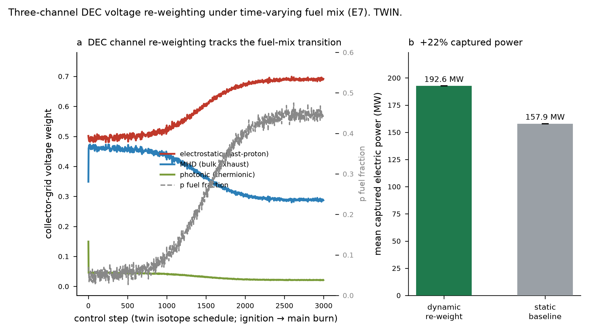
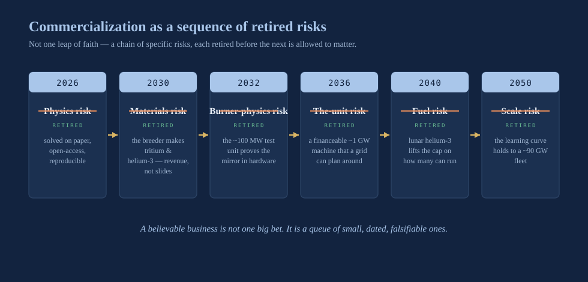

Narration in production — this player goes live when the chapter audio lands.
Igniting the Markets: The Unbound Commercial Promise of Fusion Energy
A hundred thousand years ago, a member of our species learned to hold flame in cupped hands, and in that instant the trajectory of a planet bent. Every civilization since has been, at bottom, a machine for finding better fires. Wood let us cook and keep the dark at bay. Coal let us make iron by the mountain and put a continent on rails. Oil let us fly, and move goods across oceans on a whim, and raise the sprawling, mobile, air-conditioned world we now mistake for the natural order of things. But notice what each of these truly was. Not a cheaper fuel — a new permission. A constraint lifted off the human imagination. And every single time, at the dawn of it, nearly everyone underestimated what was coming, because the people alive at the start of a transition reason about the old world's hungers, never about the ravenous new appetites the fuel itself will go on to create. We are standing at exactly such a dawn now. The fire we are about to hold in cupped hands is the fire that powers the Sun.
I wrote the 2024 version of this book with a chapter like this one, and I filled it with the far horizon: fusion-powered desalination turning deserts green, atmospheric processors scrubbing carbon from the sky, propulsion that cracks open the solar system, industries that do not yet have names. I still believe in that horizon — some of it appears later in this book, where it has earned its place. But I have learned, in the two years since, to be ruthless about the difference between what fusion will eventually enable and what fusion will first be bought for. This chapter is about the second thing. It is about the actual markets — the ones with buyers, budgets, and a pressing hunger this decade — into which our two machines are built to sell. The romance is real, and I will not apologize for it. But the commerce is what funds the romance, and I will not let either one hide behind the other.
So here is the honest architecture of the commercial promise, stated once, plainly, before I unfold it. Our near-term product is not electricity. It is materials — tritium, helium-3, high-energy neutrons — made by the breeder, Hyperion, for markets that are starved of them today. Our later product, the one this chapter dwells on longest, is firm, clean power from the burner, sold into a shortage the age of artificial intelligence has torn open faster than any planner on Earth foresaw. Two machines, two markets, two clocks. And running beneath both of them, the second of this book's three forties — the forty-dollar electron — the price target that turns a triumph of physics into a triumph of economics. Q40 is the physics. The forty-dollar line is the economics. This chapter is about the economics, and about the civilization-scale demand that is coming to meet it.
I write this chapter differently from the rest, and I should tell you why. Before fusion, I built companies and sold them — I started my first at twenty-three and watched it get bought, and did it again after that, and poured what I earned from both into the machines in this book. That is not a boast; it is a lens. It taught me a discipline that pure science does not always require: that an invention which cannot find a buyer, at a price that buyer will actually pay, for a problem that buyer actually has, is not a business — it is a hobby with a laboratory. Most of the fusion field is staffed by brilliant people who have never had to make payroll. I have. So when I tell you what these machines sell, and to whom, and why the order of the two products is not scientific taste but commercial necessity, I am not speculating. I am doing the one kind of work I knew how to do long before I knew any plasma physics at all.
The market fusion is actually for
There is a habit in fusion writing, and I have been guilty of it, of describing the market as "energy" — all of it, the whole fifteen-figure global appetite for power — as though a fusion company were selling into that entire ocean from its first day afloat. It is a seductive framing and a useless one. Nobody sells into "energy." You sell a specific product, at a specific price, to a specific buyer with a specific problem that your product solves better than the alternatives they can already put their hands on. The first question a serious commercial reader should press on a fusion company is not "how big is the energy market" — it is oceanic, everyone knows that — but "what, precisely, are you selling, to whom, and why on Earth would they choose it over what they can buy today?"
The answer, for the power business, is not "cheaper electricity in general." Here is a fact that ought to reorder your intuitions: raw energy has, astonishingly, gotten cheaper over the last two decades. The cheapest kilowatt-hours humanity has ever produced now come from sunlight and wind, and in a swelling number of places they undercut anything that burns. If fusion's pitch were "cheap energy," it would be arriving late to a race that solar has already won on price. That is the trap, and it has swallowed more than one fusion dream. Fusion is not, and must never pretend to be, the cheapest source of average energy.
What fusion sells is something the cheap intermittent sources structurally cannot deliver: firm, clean power — energy that is simply there, every hour of every day, made without a molecule of carbon, in a footprint small enough to sit shoulder to shoulder with the thing it powers. That is a wholly different product from "energy," with a wholly different and far steeper scarcity curve. The world is drowning in cheap intermittent electrons and parched for firm clean ones. The scarce commodity — the one whose price does not fall as you pour in more solar, and in fact rises as the grid fills with intermittency and demands ever more backup — is firmness that is also clean. For a century, firmness meant setting something on fire. The entire commercial thesis of the burner is that it shatters that ancient equation: firmness without combustion, power on demand without carbon. That is the product. Everything else in this chapter is a consequence of it.
And there is a buyer that wants exactly that product, in exactly the form fusion casts it, right now — sooner and more desperately than any energy planner projected even five years ago. It arrived not from climate policy, not from a mandate, but from a new kind of mind we conjured into being and then discovered, to our astonishment, was hungry.
The load that broke the forecast
For most of a century, planning an electricity grid was an exercise in gentle extrapolation. Demand in the rich world crept up a percent or two a year, predictably enough that a utility could order a power plant a decade ahead and be roughly right about where the load would stand when it switched on. That placid world is gone, vaporized, and artificial intelligence is what ended it.
The reason is physical, not financial, and it is worth feeling in the body. Training a frontier model, and then serving it to hundreds of millions of people, is a colossal act of sustained computation — and computation is nothing more than electricity converted into arithmetic and then, inexorably, into heat. A modern AI data center is not a building full of desktop computers. Picture instead a dense hall of specialized accelerators, each one drinking more power than the oven in your kitchen, packed by the tens of thousands, running flat out around the clock without pause or mercy. A decade ago a large data center might have drawn what a town uses. The ones now being drawn on blueprints draw what a city uses — hundreds of megawatts, and in the boldest proposals a full gigawatt or more, concentrated on a single site. That is the entire output of a great power station, demanded in one place, for one customer, continuously, forever.
The grids were never built for this, and they are buckling. In region after region, the true constraint on how fast artificial intelligence can grow is no longer the chips, or the capital, or the scarce engineering talent. It is the interconnection queue — the years-long wait to bolt a very large new load onto a transmission system that was sized for a gentler century. The appetite of the new mind has outrun the wires that were meant to feed it. This is not some distant projection I am asking you to take on faith; it is the operating reality of the industry today, and it is why the people building these cathedrals of computation have begun, out of sheer necessity, to think like power developers rather than tenants. They have stopped asking where they can rent electricity. They are now asking where they can build it.
Feel what that shift does to the market. When the buyer of computation is forced, by physics and by the queue, to become the buyer of generation, the customer for a power plant is no longer a slow, regulated utility shaving a fraction of a cent per kilowatt-hour across millions of ratepayers. It is a fast, hungry operator whose cost of not having power — a training run collapsed at week three, a cluster of staggering value sitting idle, a service gone dark before a watching world — dwarfs the price of the power itself into insignificance. That buyer does not crave the cheapest average electron. That buyer craves the surest electron, and will pay for firmness the way a drowning person pays for air. This is the single most important fact about the market MetroVolt is aimed at, and it is worth being exact about what such a buyer actually requires.
What a data center actually needs
To see why fusion fits this demand with almost eerie precision, you have to be exact about what the demand truly is — because "the data center needs power" quietly conceals three separate, stringent requirements, and most clean-energy options satisfy one or two of them and fail the third.
The first requirement is that the power be firm. An AI training run is a single computation stretched taut across thousands of processors for weeks at a time; a serving cluster answers queries every second of every day. Neither can survive the power going away. A data center's tolerance for interruption is measured in fractions of a second, and its value of lost load — the cost of an outage — is extraordinary, verging on the catastrophic. These facilities do not want energy that is available on average. They want energy that is available always, at full rated power, with the machine that supplies it running as close to every hour of the year as engineering will permit.
The second requirement is that the power be clean, and this one has grown teeth it did not have a decade ago. The organizations raising the largest AI facilities have made public, load-bearing commitments to run on carbon-free energy, and the sheer scale of the new demand has turned those pledges into a genuine, binding constraint. You cannot bolt gigawatts of round-the-clock load onto a grid on the back of fossil generation without smashing straight through the very targets on which the industry has staked its credibility. For a century the demand for firm power and the demand for clean power pointed in opposite directions — firmness meant burning something. The whole promise of fusion is that it collapses that trade-off into a single object.
The third requirement is that the power be co-locatable — buildable next to, or beneath, the load it serves. This is the requirement the grid crisis has hurled to the front of the line. If you cannot secure a transmission connection for years, the way out is to stop needing one: set a firm generator on the same ground as the data center and feed it directly, behind the meter, with the wider grid demoted from lifeline to backup. Co-location also unlocks something a distant power plant can never offer — the waste heat of the generator and the waste heat of the computers become a single thermal problem to be engineered as one, and the power travels meters instead of hundreds of kilometers, with none of the losses and none of the permitting wars that new long-distance transmission always ignites.
Firm, clean, co-locatable, at the scale of a full power station, on one site, for one load. Hold those four requirements together in your mind and you have written, without intending to, the specification for the burner.
| The buyer's requirement | Why it is non-negotiable | How most clean options fare |
|---|---|---|
| Firm — full power essentially every hour | An idle compute cluster is a catastrophic cost; value of lost load is extreme | Solar/wind: intermittent by nature; storage helps for hours, not seasons |
| Clean — no carbon in the exhaust | Public carbon-free commitments at gigawatt scale become a hard constraint | Fossil firming defeats the purpose; nuclear fission is clean but slow to site |
| Co-locatable — buildable at the load | Interconnection queues are the true bottleneck; behind-the-meter avoids them | Renewables need vast land; you cannot put a solar farm under a data hall |
| Station-scale on one site — a gigawatt for one customer | The largest campuses now match a full power station in appetite | Assembling that from distributed sources multiplies siting and integration cost |
Why firm power wins
Let me be scrupulously fair to the alternatives, because the honest case for fusion is never made by caricaturing the competition. Solar and wind are the cheapest sources of raw energy the human species has ever built, and for a vast range of uses they are simply the right answer, full stop. The AI buildout will and should lean on them heavily. But there is a specific, unbridgeable mismatch between intermittent generation and a gigawatt-scale, always-on computational load, and it deserves to be named with precision rather than shouted about in slogans.
The mismatch is not the poetic fact that the sun sets. It is arithmetic, cold and unarguable. A data center wants full power every hour of the year — call it a capacity factor near one. A solar farm in a good location delivers its rated power perhaps a quarter of the hours in a year; a wind farm, perhaps a third to a half. To forge that intermittent supply into the firm, around-the-clock power the load demands, you must massively overbuild the generation and then hoard the surplus in storage — and storage that can carry you across not just a night but a stretch of cloudy, windless days is exactly where the cost and the land requirement climb toward the vertical. The land itself becomes the wall. Powering a single gigawatt-scale, 24/7 facility purely on overbuilt renewables plus multi-day storage can devour tens of square kilometers of panels and a battery installation to match. You can do it. In many places you should build as much of it as the land allows. But it does not co-locate — you cannot lay tens of square kilometers of solar beneath a data hall — and at the scale and firmness the largest facilities crave, it stops being the cheapest path and becomes a sprawling, land-hungry one.
There is a subtler economic law beneath the land, and it is the one that ultimately decides these markets. A capital-heavy generator — and every clean firm source, fusion emphatically included, is capital-heavy — earns back the cost of its own existence only by running. The single largest lever on the price of its electricity is not the fuel and not the crew; it is the capacity factor, the fraction of the year the machine is actually selling power. A plant that runs ninety-plus percent of the hours spreads its build cost across three or four times as many electrons as one that runs a quarter of them. This is why "firm" and "cheap" are not enemies for a generator that can run without stopping: for a machine with negligible fuel cost and towering uptime, firmness is the road to a low price, because it is the road to selling every single hour you built the plant to sell. It is also why, as the control chapter argued at length, the entire intelligence layer that runs a fusion plant exists to drive its capacity factor as close to one as physics will bear. For a capital-heavy machine, the fraction of the year it runs is the price of its electricity. Master uptime and you have mastered cost.
Now put the candidates side by side, not rhetorically but numerically. Push the capacity factor from a quarter to nine-tenths and you have not shaved the price of the electron — you have divided it by something close to four, because you are spreading the same fixed build across nearly four times the salable output.
| Source | Typical capacity factor | Available on demand? |
|---|---|---|
| Solar (good site) | ~25% — about a quarter of the year's hours | No — follows the sun |
| Wind (good site) | ~33–50% | No — follows the weather |
| Burner (engineered) | high eighties to mid nineties | Yes — runs when fueled, around the clock |
That gap is not a marginal edge. It means one burner clears three to four times the annual electrons of a solar array of the same rated size — and it clears them on a schedule the buyer chooses rather than one the weather dictates. For a load that must be fed every hour, the intermittent machine's cheap nameplate is a mirage: the electrons it fails to deliver at three in the morning on a windless winter night have to be bought, stored, or overbuilt into existence, and every one of those remedies is a cost the headline price never mentioned.
There is an honesty I owe you on the other side of this ledger, and it sharpens the case rather than softening it. A fusion burner is not a free fountain of power; it spends a great deal of electricity running itself — energizing its enormous magnets, driving its heating systems, holding the plasma in its bottle. The figure that captures what is left over is the engineering gain, and for our burner it stands at Q_E ≈ 1.318: for the electricity the plant recirculates to keep itself alive, it returns about a third again as much, net, to sell. That is a genuinely positive margin — the machine is unambiguously a generator, not a net drain like the breeder — but it is not lavish, and I will not dress it up as though it were. A modest engineering gain is precisely why the other two levers are not luxuries but necessities. If only a portion of the gross output survives to be sold, then you must run the machine as near to every hour as physics allows, so that the fixed cost is spread across the maximum, and waste as little as possible turning fusion power into salable electricity — which is the entire reason the burner converts its charged exhaust directly to current instead of paying the steep thermodynamic tax of a boiler and turbine. Capacity factor and direct conversion are the same argument arriving from two directions: with a finite engineering gain, every hour of uptime and every point of conversion efficiency is money.
This is where the second of the three forties actually lives. The forty-dollar electron is not conjured by the physics of ignition alone; it is earned, hour by uninterrupted hour, by a machine with negligible fuel cost running flat out and converting cleanly. Q40 gets you a plasma that returns forty times its energy. The forty-dollar line gets you a business, and it is written not in the fusion cross-section but in the capacity factor — which is exactly why the intelligence layer that defends uptime, described at length in the control chapter, is not an accessory to the economics but its beating heart.
A data center does not want power on average. It wants power always, in one place, made cleanly — and that is the one combination the twentieth-century grid was never designed to sell.
This is the gap MetroVolt is built to fill. Not to overthrow cheap intermittent power — to supply the firm, dense, co-located core that intermittent power, by its very nature, cannot. The two are complements, not rivals; allies, not enemies. A sensible grid of the 2040s runs on a vast, cheap, intermittent bulk drawn from sun and wind, wrapped around a firm clean core that holds the whole structure upright when the weather refuses to cooperate and carries the loads — like a gigawatt of always-on computation — that cannot be told to wait for a sunny afternoon. Fusion's market is that core. It is a smaller share of the total electrons than solar will ever be, and an incomparably more valuable one.

A gigawatt in a building
Now set the burner into that gap and watch the requirements fall into line, one after another, as if the machine had been designed to a specification written by the market itself.
The commercial burner is designed as a roughly one-gigawatt firm unit. That number is not an accident, and it repays a moment's attention, because it is a place where we deliberately chose the more conservative engineering over the more dazzling. The burner's physics — laid out in full in the chapter on the machine itself — scales with the length of its central cell, and on paper the same design can be stretched to well beyond two gigawatts of net output. We did not size the commercial fleet at the maximum. We sized it near a gigawatt, because a gigawatt unit is easier to finance, easier to site, and — most decisive of all — descends the manufacturing learning curve faster, since you build more of them. And it happens that a gigawatt is also almost exactly the scale of the largest single AI campuses now being drawn on blueprints. One firm, clean burner, one hyperscale computational load, matched in size like two halves of the same coin. That is not a coincidence engineered after the fact; it is what "the natural unit of firm power" turns out to mean in the age of intelligence.
The burner is firm by construction. It is a generator, not a weather-dependent harvester of ambient energy; it runs when you fuel it and holds its rated output around the clock, its capacity factor defended by the intelligence layer for the reasons the firmness argument already laid out. It is clean in the way that matters most for a plant sited next to where people work and live: it burns deuterium and helium-3, a low-neutron fuel that carries only about five percent of its energy in neutrons rather than the eighty percent a conventional fusion fuel would fling out, so its structure is not steadily gnawed apart from within and its shielding is sized to a gentle source. There is no carbon in the exhaust because there is no combustion at all — only fusion, and a stream of charged particles caught and turned straight into current.
And it co-locates. This is where an architectural choice made for pure physics reasons pays a wholly unexpected dividend for this market. Because the burner converts its charged exhaust to electricity directly — no boiler, no steam turbine, none of the nineteenth-century thermodynamic machinery — it produces its power natively on a direct-current bus. And AI data centers are, increasingly, direct-current loads: the accelerators inside them run on DC, and every conversion between AC and DC on the way in is a place where precious energy escapes as waste heat. A generator that produces DC, sited beside a load that consumes DC, can in principle shorten that lossy chain to almost nothing. The waste heat the burner's bottoming cycle rejects, and the waste heat the computers exhale, become one thermal system to design rather than two to fight. The power travels the length of a corridor, not the width of a state. The burner was designed to be a clean generator; it turns out to be a clean generator shaped, almost point for point, like the very thing a hyperscale data center most wants to be built next to. When form and demand align this closely, it stops feeling like engineering and starts feeling like destiny.
Anatomy of a co-located gigawatt
Let me make the co-location argument concrete, because "behind the meter" is a phrase that hides a great deal of engineering, and the engineering is where the case is actually won. Picture a hyperscale campus of the mid-2030s — a computational load of roughly a gigawatt, drawn continuously, on a single site. Follow what it takes to feed that load, and watch each of the burner's design choices earn its keep.
Begin with the wire the campus does not have. Its operator went looking for a grid connection and found the interconnection queue: a wait measured in years to bolt a gigawatt of new load onto a transmission system sized for a gentler century, behind a line of others waiting for the same scarce headroom. The queue, not the chips and not the capital, is the true governor on how fast the campus can be built. The co-located burner's first act is simply to make the queue irrelevant — to set a firm generator on the same ground as the load and feed it directly, with the wider grid demoted from lifeline to backup. Years of waiting collapse into the footprint of a single site the operator already controls.
Then follow the electrons through the walls. A conventional plant makes alternating current, which must be stepped and rectified into the direct current the accelerators actually run on — and every conversion in that chain sheds a slice of the power as waste heat. The burner makes its power natively on a direct-current bus, because it converts its charged exhaust straight to current with no spinning machine in between. Generator and load speak the same electrical language across a corridor; the lossy translation layer that a distant AC plant forces on the campus largely disappears. At a gigawatt drawn every hour of the year, the points of efficiency saved in that shortened chain are not a rounding error — they are a continuous dividend, paid for the life of the plant.
Then follow the heat. A data center's deepest engineering problem is not getting power in; it is getting heat out — the gigawatt that goes in as electricity comes out, almost all of it, as warmth that must be carried away without cooking the silicon. A co-located burner turns two thermal problems into one. The heat its bottoming systems reject and the heat the computers exhale become a single system to design, on a single site, rather than two facilities fighting the same battle a hundred kilometers apart. The star's waste heat and the silicon's waste heat share one set of plumbing.
Now the requirement the buyer will not bend on: firmness, expressed as redundancy. A campus of this value does not stake itself on a single generator, however reliable; it wants firm power that survives the loss of any one unit, and it wants to keep running through the maintenance windows that even a machine engineered for the high eighties to mid nineties must occasionally take. The natural answer is not one enormous machine but a small cluster of gigawatt-class burners in an N-plus-one arrangement, so that one can be down for service while the load never notices, with the grid tie standing behind them as a final backstop. This is where the choice to size the commercial unit near a gigawatt rather than at the design's two-gigawatt-plus maximum pays a second dividend: a fleet of right-sized units gives an operator granularity, redundancy, and a manufacturing learning curve that a handful of maximal one-offs never could.
And underneath all of it sits the arithmetic of value that makes the buyer indifferent to a premium on the electron. For this customer the cost of not having power — a weeks-long training run collapsing in its third week, a cluster of staggering value sitting dark, a service failing before a watching world — dwarfs the price of the power itself. Such a buyer does not shop for the cheapest average electron. It shops for the surest one, at the scale of a full power station, on ground it controls, made without the carbon it has publicly sworn off. Assemble the pieces — no queue, native DC, shared thermal, redundant firm units, a catastrophic value of lost load — and the co-located burner stops looking like an exotic option and starts looking like the obvious one. The machine was designed to a specification the market wrote without knowing it was writing it.
The machine that helps run the machine
Here is the part of this chapter I find genuinely beautiful, and I have tried hard to earn the right to call it that rather than merely assert it — because a claim of beauty in a technical book is a promissory note the numbers had better honor.
The same artificial intelligence that is straining the world's grids to the breaking point is the artificial intelligence that makes the fusion plant runnable in the first place. These are not two different technologies that happen to share a fashionable name. They are the same family of tools, aimed at opposite ends of a single problem. The accelerated computation that trains and serves large models — the dense, relentless arithmetic that has made AI so ravenous for power — is precisely the computation that trains the physics-informed surrogates and runs the predictive digital twin at the heart of the plant's control system. The chapter on control described that system in full: a twin of the plant that runs milliseconds ahead of reality, learned models that reproduce slow physics in a fraction of the time, a safety clamp that caught 3000 of 3000 injected limit violations with zero escapes across 150,000 steps, a quench precursor that stretches a magnet-destroying event's warning from 2.6 milliseconds to 47, a disruption ensemble sharp enough to reach an AUC of 0.990. All of it is machine learning, and all of it runs on the same class of accelerated hardware — the ecosystem NVIDIA built for artificial intelligence broadly — that the data centers themselves are packed with, chip for chip.
So the circle closes, and closes cleanly. The demand that makes MetroVolt necessary is the demand created by artificial intelligence. And the intelligence that keeps a MetroVolt plant safe, and drives its capacity factor high enough to reach the forty-dollar line, is artificial intelligence of the very same kind, running on the very same silicon. The load and the enabler are one technology, wearing two faces and staring at each other across a wire.
The intelligence that strains the grid is the intelligence that runs the plant. The hunger and the cure are the same tool, pointed at opposite ends of the same wire.
I want to be scrupulous about what this does and does not claim, because the naming here matters and I refuse to let poetry slide quietly into implication. Our control work uses the standard accelerated-computing ecosystem that the whole field of AI is built on; that is a statement about the tools, and nothing more. It is not a statement that any particular data center is a customer for a fusion plant. There is no such relationship to report, and I would tell you flatly if there were. The point is narrower, and to my mind far more wondrous, than any commercial arrangement: the two problems are made of the same mathematics and run on the same silicon, so a civilization that has learned to build one has already, without quite realizing it, built most of what it needs to build the other. The AI that helps run the fusion plant is not a metaphor and not a marketing flourish. It is the same code, on the same kind of machine, doing physics instead of language. We taught sand to think; now we will teach it to tend a star.
Aegis: firm power where failure is not an option
Data centers are the loudest firm-power market of the decade, but they are not the only one, and it would be a strategic blunder to build a company around a single kind of buyer, however fashionable. There is a second market for exactly the same product — firm, clean, co-locatable power — with an even lower tolerance for interruption and an even higher value of lost load. It is the market for critical infrastructure that cannot, under any circumstances the world can throw at it, be allowed to go dark: fixed defense installations, command and communications sites, forward and remote bases, and the heavy industrial facilities that run continuous processes ruinous to stop. We give the burner a second housing for this market and call it Aegis — the same D–³He generator, hardened and configured for a fixed site where reliability is not a preference but a mission.
The logic that makes fusion irresistible here is the logic of the islanded microgrid. A base or a critical facility that leans on the public grid inherits every vulnerability that grid carries — every storm, every cascading failure, every deliberate strike on a distant substation or a long, exposed transmission line. The traditional answer is on-site diesel: firm and dispatchable, yes, but utterly chained to a fuel convoy that must keep arriving, which in a contested environment is itself a liability and a target painted on a map. A firm generator that runs for long stretches on a fuel of extraordinary energy density, sited inside the perimeter, rewrites that calculus entirely. It transforms a site that was a fragile node on someone else's network into a site that makes its own power, cleanly, behind its own defenses, with the outside grid demoted to a mere backup. That is a security proposition before it is an energy proposition, and it is bought by an institution that reasons about resilience and continuity, not about a fraction of a cent per kilowatt-hour.
To be clear and conservative about scope: Aegis is the fixed-installation case — stationary sites on land — and nothing in this book should be read as a claim about mobile or naval propulsion, which is a different and far harder problem we are making no promises about. The same restraint governs the timing, which I will come to: Aegis is a burner housing, so it lives on the burner's clock, not the breeder's. What the defense and heavy-industry market does for the commercial story is widen it, and widen it powerfully. It means the burner is not a one-customer machine betting its whole future on the trajectory of a single fashionable industry. It is a firm-clean-power machine with at least two large, independent classes of buyer — the hyperscale computational load and the mission-critical fixed installation — who crave the same thing for entirely different reasons, which is precisely the diversification a durable business is built on.
There is a third face to this same demand that deserves more than a passing sentence, because it is where fusion's firmness meets the most stubborn frontier of decarbonization. A great deal of the world's carbon does not come from electricity at all — it pours out of heat, the high-temperature process heat that forges cement, steel, chemicals, and fuels, and which must run continuously because the furnaces are ruinous to cool and reheat. Intermittent electricity is a hopeless match for a process that can never stop. A firm, clean generator that delivers both power and high-grade heat, on site, around the clock, is a superb one. I will not overclaim here — this is a market fusion grows into over decades, not one it seizes at launch — but it is the same product, the firm clean core, sold to yet another buyer who cannot survive on an intermittent supply. Firmness is the thread that stitches data centers, defense, and heavy industry into one market rather than three.
The furnaces that cannot cool
The firm-power thesis has a frontier that gets far less attention than data centers and deserves far more, because it is where the hardest carbon on Earth is hiding. A great deal of the world's emissions does not come out of power plants at all. It pours out of heat — the high-temperature process heat that forges the physical substance of civilization, and which, crucially, must run without stopping because the furnaces are ruinous to cool and reheat.
Consider what these processes actually demand. A cement kiln runs its charge to roughly fourteen hundred and fifty degrees Celsius, day and night, for months on end; let it cool unplanned and you can crack the kiln itself. Primary steelmaking and the electric-arc furnaces that recycle steel work at temperatures higher still. Glass melts in tanks held near sixteen hundred degrees that are designed to run for years between cold shutdowns. Ammonia synthesis — the reaction that feeds much of humanity through fertilizer — runs continuously at high pressure and several hundred degrees. Refineries and petrochemical crackers hold their columns at steady heat around the clock. What unites them is not a temperature; it is a cadence. These are not loads you can switch off when a cloud passes. They are appetites that must be fed every hour of every day for years, and an intermittent supply is not merely a poor match for them — it is a category error.
| Continuous process | Approx. operating temperature | Why it cannot stop |
|---|---|---|
| Cement kiln | ~1,450 °C | An unplanned cooldown can crack the kiln |
| Glass melting tank | ~1,500 °C | Designed to run for years between cold shutdowns |
| Primary steel / arc furnace | very high, above ~1,500 °C | Cooling and reheating wastes energy and damages plant |
| Ammonia synthesis | several hundred °C, high pressure | Continuous catalytic reaction feeding global fertilizer |
| Refining / petrochemical cracking | a few hundred °C, sustained | Columns held at steady heat around the clock |
This is why electrifying heat with intermittent power, on its own, runs into a wall. You can drive a furnace with electrons instead of flames, but if those electrons arrive only when the wind blows, you must either overbuild and store on a heroic scale or keep a fossil furnace warm as backup — which quietly defeats the entire purpose. What a continuous high-temperature process wants is a firm source that delivers both electricity and high-grade heat, on site, forever. And that is a description of the burner in cogeneration: a machine that produces salable electricity on its DC bus and rejects a great deal of high-grade heat that, rather than being thrown away to a cooling tower, can be carried straight into an adjacent industrial process. One firm generator, two products — power and process heat — feeding a plant that can never be told to wait for a sunny afternoon.
I will be as disciplined about this market as I have tried to be about the others, because it is the one where overpromising is easiest. Industrial heat is not a market fusion seizes at launch. It is a market fusion grows into across decades — the furnaces are enormous, their owners conservative, their plants built to run for generations, and retrofitting a firm fusion heat source into an existing industrial complex is a formidable undertaking that waits on a mature fleet and a cheap fuel supply. The early burners go to the loudest, deepest-pocketed, most power-starved buyers — the data halls and the critical installations — not to a cement works. But the logic is identical to everything else in this chapter, and that identity is the whole point. Heavy industry is one more buyer who cannot survive on an intermittent supply, wanting the same firm clean core for reasons entirely its own. Firmness is the thread that stitches the data center, the defense base, and the furnace into a single market rather than three unrelated ones — and it is why a machine built first for computation is, in the long arc, a machine for decarbonizing the physical economy itself.
Power you can stand next to
There is a single physical property that runs underneath all three of these markets — the data hall, the defense base, the furnace — and quietly makes each of them possible. It is worth pulling into the open, because it is the least glamorous of the burner's numbers and, for the commercial story, very nearly the most important.
Ordinary fusion, the deuterium–tritium reaction that most of the field pursues, is spectacularly violent in a way that is easy to miss from the triumphant headlines: roughly four-fifths of its energy comes off as fast, uncharged neutrons at fourteen million electron-volts. Neutrons at that energy are difficult company. They cannot be steered by magnets or caught by an electrode; they fly straight into whatever surrounds the plasma, hammering the structure atom by atom until it swells and embrittles, and leaving much of the plant radioactive in their wake. A D–T machine is, in a real sense, a device for slowly destroying its own walls and activating its own building. That is survivable for a research reactor and a genuine burden for a commercial one — it dictates thick shielding, generous standoff, remote handling, and a plant people cannot casually stand beside.
The burner burns deuterium and helium-3 instead, and the number that follows from that choice is f_n ≈ 5.44% — the fraction of the fusion power that leaves as neutrons. Set it against the roughly eighty percent of a D–T machine and the whole character of the plant changes. The neutron budget is smaller by more than an order of magnitude. The structure is not steadily gnawed apart from within, so components last far longer and the plant's economic life stretches. The activation problem shrinks toward a rounding error, and with it the volume of material that must ever be treated as waste. The shielding is sized to a gentle source rather than a brutal one, which shrinks the machine and its footprint. Every one of those is an engineering advantage, and every engineering advantage here is also, directly, a commercial one — a longer-lived, smaller, cheaper-to-shield plant is a plant a cautious buyer and a cautious regulator can say yes to.
But the consequence that matters most for the markets in this chapter is the human one. A low-neutron plant is a plant people can work near. That sentence sounds modest and is not. A hyperscale data center is a staffed, continuously maintained facility, its operators moving among the racks around the clock; the firm generator that powers it has to be a machine they can be housed beside, not a radiation source that forces them behind meters of concrete. A defense installation is garrisoned — it is precisely a place where people live and work and cannot be evacuated to make room for the power plant. A firm generator that a garrison can be stationed beside, that technicians can maintain hands-on, that does not turn its own building into a hazard, is a fundamentally different proposition from one that must be operated at arm's length behind heavy shielding. The 5.44 percent is what makes Aegis a plant a base can actually host, and MetroVolt a plant a data hall can actually contain.
And it braids straight back into survivability, which is the defense market's whole reason for being. An installation that makes its own firm power behind its own perimeter has already cut the cord to a vulnerable public grid and its long, exposed transmission lines. Do it with a fuel of extraordinary energy density and you cut the second cord too — the fuel convoy that on-site diesel can never escape, the tanker that must keep arriving and can be interdicted or simply fail to come. A burner runs a long time on a small mass of fuel, sited inside the wire, cleanly enough that the people it protects can live alongside it. That is not merely an energy proposition; it is a continuity-of-operations proposition, bought by an institution that reasons about surviving the worst day imaginable rather than about a fraction of a cent per kilowatt-hour. The same quiet number — a twentieth of the energy in neutrons instead of four-fifths — is what lets the machine be firm, clean, and close, which is the exact combination every buyer in this chapter turns out to need.
The staged path: from materials to power markets
Now I have to slow the excitement down and tell you the part most fusion narratives quietly skip, because it is the part that makes ours honest: the power business is the second act. The first act — the one that generates revenue this very decade — is not power at all. It is materials.
The breeder, Hyperion, is a deuterium–tritium spherical tokamak, and its purpose is to make fuel and materials — tritium, helium-3, and streams of 14 MeV neutrons — not primarily to make electricity. On the power ledger the breeder is, honestly and by design, a net consumer; it runs at roughly −79 MWe, and its value lies not in the electrons it nets but in the substances it conjures. And those substances are scarce in a way few markets on Earth have ever been. Tritium is among the rarest and most valuable materials on the planet, produced today only as a faint trickle byproduct of an aging fleet of a particular kind of fission reactor, with a global inventory measured in mere kilograms and a supply that is not growing. Helium-3 is rarer still — a whisper of a substance. High-energy neutrons on tap are a research and industrial input that today demands scarce, oversubscribed facilities that researchers queue years to use. A machine that can make these — deliberately, at a chosen rate, with a breeding ratio above one (the frozen lever: 1.03–1.20) so it replaces the fuel it devours — tritium-marginal by design, with the lever stated in the open — is selling into markets that are supply-constrained rather than price-constrained. That is a profoundly different and far friendlier commercial position than trying to undercut solar on the price of a commodity electron.
This is why the shape of the two fleets is so different, and why the difference is a feature rather than a compromise. The breeder market is finite — the world needs a bounded quantity of tritium and helium-3 — so you build few breeders, deliberately, marching down a learning curve from a first-of-a-kind unit to progressively cheaper, faster-built successors, and adding capacity only as the materials demand grows. The power market, by contrast, is effectively unbounded — the world's appetite for firm clean electricity has no ceiling anyone can see — so the burner fleet is engineered to grow vast, many units descending a steep manufacturing learning curve, once its fuel supply is unlocked. Few breeders, many burners. A foundry and a fleet. The foundry funds the fleet.
| Breeder — Hyperion (the foundry) | Burner — MetroVolt / Aegis (the fleet) | |
|---|---|---|
| What it sells | Materials: tritium, helium-3, high-energy neutrons | Firm, clean power (and, later, process heat) |
| Market shape | Finite, supply-constrained — build few, deliberately | Effectively unbounded — build many, at scale |
| Near-term role | The cash engine; revenue this decade | The long-run scale story; revenue in the 2040s |
| Power balance | Net consumer of electricity, by design | Net firm generator, the product itself |
| Gated on | Buildable on physics already in hand | Cheap fuel — lunar helium-3 — to scale |
The staging matters commercially for a reason beyond cash flow, and it is the reason I sleep at night: it means the company's first product does not depend on the hardest unsolved thing. The breeder is buildable on gain that is already solved and published — the design is closed, open-access, and independently reproducible, even though no hardware has yet been cut. Its business is materials, and materials do not wait on the burner's economics to work. The burner, the power machine, has exactly one real remaining physics gate to clear on hardware, and its economics hinge on a fuel supply that is genuinely cheap. Separating the two means the near-term business rests on the more certain foundation, and the speculative, far larger business is funded by it rather than gambled on ahead of it. That is the exact opposite of the usual fusion posture, which stakes everything on a single, heroic leap to cheap electricity and asks the world to hold its breath. We staked the near term on the surer thing and let it pay for the reach.
And this is the place to state, with the same tiered honesty this book applies to physics, the strongest sentence the plan supports about MetroVolt's economics — because it is stronger than people expect, and it deserves to be said with its gate attached. The physics of the burner closes on the model: engineering gain 1.318 on measured component efficiencies, one named plug requirement standing between closed-on-model and demonstrated. The economics of MetroVolt close on the model in exactly the same sense: the forty-dollar megawatt-hour follows from the machine's parameters and the fuel's price by arithmetic anyone can rerun — conditional on one named lever, cheap helium-3 at scale, which means the Moon. The moment lunar helium-3 exists at industrial volume, no new idea is required for MetroVolt to work commercially; the case is already closed on paper, waiting on a supply chain rather than a discovery. That is why this is a forty-year book and not a forty-year excuse: the work of making that lever real — the breeder that bridges the fuel gap from Earth, the staged fleet, the lunar campaign at the end of the road — is not deferred to some future decade. It is the plan's very spine, and it is funded, sequenced, and underway in the only decade we control: this one.
There is one more link in the materials story that closes a loop worth savoring: the burner's fuel, helium-3, is one of the very things the breeder makes. The early burners run on breeder-made helium-3. So the foundry does not merely fund the fleet financially; in the beginning it fuels it, literally, atom by atom, until a far larger and cheaper source of helium-3 comes online. That source, and the date it arrives, is what ultimately governs how vast the power business can grow — and it is the honest limit I turn to at the end of this chapter.
How a new firm generator wins a market
Suppose the machine works and the fuel is there. It does not follow, automatically or even easily, that the market embraces it. Energy is the most conservative industry on Earth, and for excellent reasons: its assets last for decades, its failures are spectacular and public, and its buyers are rewarded for caution far more richly than for daring. A new generator does not win by being clever. It wins by retiring risk, one category at a time, until a cautious buyer's decision to choose it becomes the safe choice rather than the bold one. It is worth being explicit about how that happens, because the pattern is not mysterious — it has been walked before, by every transformative machine that ever went from marvel to mundane.
The most instructive precedent is the commercialization of the previous nuclear era. Fission arrived as a laboratory miracle and then had to become an industry, and its history is a cautionary tale fusion can learn from rather than blindly repeat. Fission's costs did not fall with scale the way manufactured technologies almost always do; in many places they perversely rose, because each plant was a bespoke megaproject — individually designed, individually litigated, individually financed — so that little of what was learned building one ever transferred to the next. The lesson is not that nuclear is doomed. It is that the unit of production was wrong. A firm generator becomes cheap the way aircraft and gas turbines and solar modules became cheap — by being a product built many times, not a project built once. This is the single most important reason the commercial burner is sized near a gigawatt rather than at its physical maximum: a smaller, repeated unit is built often enough to descend a real learning curve, where each unit is cheaper and faster than the last, and knowledge compounds instead of evaporating between one-off megaprojects.
Fusion also strides in carrying three advantages the previous nuclear era never possessed, and they are commercial advantages fully as much as physical ones. It cannot melt down — there is no chain reaction to run away, and cutting the fuel supply extinguishes the reaction in an instant, which transforms the safety case and, with it, the regulatory and insurance burden that so crushed fission. Its fuel is not a proliferation-sensitive, weaponizable heavy element that must be guarded like a crown jewel. And the low-neutron D–³He fuel of the burner throws off a small enough neutron flux — around 5.44 percent of the energy, against the roughly 80 percent of conventional fusion fuel — that the machine is not steadily destroyed from within, which is at once an engineering advantage and an economic one, because it lengthens the life of the plant and shrinks the waste and shielding problem toward a rounding error. A regulator reasoning about fusion is reasoning about a fundamentally more forgiving object than a fission reactor, and while the regulatory frameworks are still being written, the physics gives them far less to fear.
The other risks a firm generator must retire are prosaic and every bit as decisive. Siting risk — fusion's small footprint and absence of a vast exclusion zone, married to the co-location strategy, means it can be raised where the load already stands rather than fighting for a remote site and a transmission corridor. Interconnection risk — behind-the-meter co-location sidesteps the multi-year queue that is the true bottleneck for large new loads today. Financing risk — a repeated, standardized product, with a first-of-a-kind unit proven and successors demonstrably cheaper, is financeable in a way that a perpetual parade of one-off megaprojects never is. And operating risk — the capacity factor a capital-heavy plant lives or dies by is precisely what the AI control layer is built to defend, turning uptime from a hope into an engineered, measured, guaranteed quantity. None of these is a breakthrough. All of them are the unglamorous, decisive labor of turning a machine that can make power into a business that reliably sells it. A fusion company that believes its job ends when the physics is solved has misunderstood which half of the problem is harder — and it is not the physics.

The global demand for clean firm electricity
Step back from the specific buyers of the 2030s and take in the shape of the whole century, because it is the vast backdrop against which this entire enterprise is worth building. The world is doing two enormous things at once, and both of them point at the same scarce commodity. It is electrifying — dragging transport, heat, and industry off molecules and onto electrons — which swells the electricity system beyond anything in its history. And it is decarbonizing — straining to make every one of those electrons clean. The intersection of those two great migrations is a demand for clean electricity that grows faster than any single generation technology can hope to fill, and inside that, a demand for the firm clean part that grows faster still, because the more of a grid runs on intermittency, the more precious the firm backbone that holds it upright becomes. This is not a temporary spike tied to one industry's passing fashion. It is a structural, decades-long widening of the exact gap fusion was built to fill.
There is a global-equity dimension to this that I care about deeply and will state without inflating it into a promise I cannot keep. The parts of the world that most desperately need new power are often the parts least able to build the sprawling, land-hungry, transmission-heavy infrastructure that intermittent generation at scale requires, and least able to absorb the wild price volatility of imported fuel. A firm generator with an extraordinarily energy-dense fuel, a small footprint, and no carbon exhaust is, in principle, a way to carry reliable clean power to places that cannot easily build anything else at scale — not as charity, but as a product suited to precisely the conditions where every alternative is worst. I say "in principle" deliberately and repeat it on purpose. This is a market fusion reaches late, after the fleet is large and the fuel is cheap, and I will not pretend the first units go anywhere but to the deepest-pocketed, most power-starved buyers in the richest markets. But the direction of the technology, across the long horizon, bends toward wider access rather than narrower — and that is part of why it is worth a life's work.
And there is the market this book gives its own chapter to, which I will only gesture at here so as not to double-count it: energy and water are the same problem wearing two faces, and a firm, cheap, clean supply of one becomes, almost magically, a supply of the other. Where power is abundant and firm, seawater becomes fresh water, and the arid places that today ration both can have both. That is the oldest and most humane version of the fusion promise, and it survives from the 2024 version intact — but it, too, waits on the far side of the same gate as the rest of the power business, and I would rather underpromise it here and let it earn its place later than wave it around now as a banner.
The through-line of all of it — data centers, defense, heavy industry, developing grids, desalination — collapses into a single sentence. The world is not short of energy. It is short of firm, clean energy, and it is growing shorter of it every year that electrification and decarbonization advance together. That shortage is the market. It is enormous, it is durable, and it is widening through exactly the decades in which the burner fleet is designed to come online.
Honest about the clock
Now the discipline, which is where this book earns whatever trust it has built with you. Everything I have written so far is true about the fit between fusion and these markets. None of it is true yet about the timing, and I would be betraying the entire method of this book if I let the excitement of the market blur the dates by so much as a year.
The power business is the long-run act. The near-term product of this company is not electricity at all — it is the breeder, Hyperion, which makes fuel and materials, and which is the cash engine funding everything downstream. Its construction begins in the second quarter of 2027, and its first tritium follows around 2030. That is the near-term commercial reality, stated without ornament: a materials business, buildable on physics already in hand, generating revenue this decade. The power machines come after it, deliberately and in stages. The first burner is a roughly hundred-megawatt test machine, and it is scheduled to begin construction around 2032 — a demonstrator built to prove the physics on hardware, not a product for sale. The commercial burner fleet begins around 2036. That is the first date at which a MetroVolt-class or Aegis-class machine is a thing you could actually contract for, and it is a decade out from the writing of this chapter. I am not going to pretend otherwise to catch a wave that is cresting today.
And there is a second gate beyond the first, which governs not whether the power business exists but how vast it can grow. The burner burns helium-3, and helium-3 is vanishingly rare on Earth. The early commercial units run on the trickle the breeder fleet produces, which is enough for a modest number of machines and not remotely enough for a market measured in dozens of gigawatts. The scale story — the part where the burner becomes a meaningful fraction of the world's firm, clean power — waits on lunar helium-3, arriving around 2040, when the fuel constraint finally lifts and the fleet can grow toward the scale the demand actually wants, marching toward something on the order of ninety units and ninety gigawatts by 2050. That sequence is the subject of its own chapter; here it is enough to hold its shape in the mind. The burner is real from the mid-2030s, small. It becomes large in the 2040s, gated on the Moon.
So when I say firm-clean-power demand is the defining energy story of the decade, I am describing the problem, not claiming to be its immediate solution. The grids are straining now. The data centers need firm clean power now, and in the near term they will get it — where they can — from the sources available now: renewables where they fit, storage, and firm low-carbon generation of every kind that can be raised quickly. Fusion is not the answer to the 2026 interconnection queue, and anyone who tells you it is has confused a vision with a delivery date. What fusion is, is the answer to the 2040s version of this same problem, when the demand for firm clean power is larger still and the intermittent-plus-storage path has been built out toward its practical limits. The power fleet is aimed at the durable, structural, decades-long shortage of firm clean electricity that electrification and the age of intelligence have torn open — not at this year's crisis, but at the far larger and longer one rising behind it.
That is the honest framing, and it is the conservative one on purpose. A fusion company that promises to relieve the grid next year is a fusion company you should close the door on. A fusion company that says the market you are watching explode today is the exact shape of the market our later machine is built for, and here is the decade in which we come to meet it — that one you can hold to a date, and I mean for you to hold me to it. And in the meantime, it is not asking you to wait empty-handed. It is selling materials this decade while the power machines are built, which is the whole difference between a company with a product and a company with a promise.
The shape of the bet
Step back one final time and the logic of the commercial promise resolves into a single clean line, the way a constellation resolves out of scattered stars once you know where to look. The world is not short of energy; it is short of firm, clean, co-locatable energy, and it is growing shorter of it every year that electrification and decarbonization advance together. Artificial intelligence has thrown that shortage into blazing relief by creating, for the first time in the entire history of the electricity system, a demand for firm clean power at the scale of full power stations, concentrated on single sites, growing faster than the grid can possibly be reinforced — and defense, heavy industry, and the developing world stand in line behind the data centers, each wanting the same product for reasons of its own. That demand is not a temporary spike; it is a tectonic shift, and it widens through the very decades in which the burner fleet comes online. The burner is a firm, clean, roughly gigawatt-scale generator that produces its power on a DC bus and yearns to be co-located with its load. And the intelligence required to run it safely and profitably is the same intelligence, on the same hardware, that opened the shortage in the first place.
The forty-dollar electron — the second of this book's three forties — is the burner's electron, and this is where it goes to market. I will not pretend the price is in hand; it rides on cheap lunar fuel and on capacity factors the control system must still earn, and both of those are dated to the 2040s, not to now. But the destination is clear as a bell, and it is worth stating in one sentence, because it is the whole reason this chapter sits in the book at all. The machine that thinks is the machine that made the world short of clean power; the machine that burns clean fusion fuel is the machine that can end the shortage; and the machine that controls the fusion plant is, remarkably, the same kind of machine as the one that thinks. Three machines, one technology, one arc bending across the century — and at the end of it, firm clean electricity, made next to where it is used, in the quantities the age of intelligence will demand of us.
And beneath the power business, funding it and preceding it, sits the quieter commercial fact that makes the whole grand thing bankable: before we sell a single firm electron, we sell the materials the world cannot get enough of. The foundry pays for the fleet. The near term is materials; the long term is power; and the bridge between them is a fuel we first make on Earth and then, when the market finally outgrows what Earth can supply, carry down from the Moon. Humanity has always found its next fire. This time we are building it — and, when Earth's supply runs thin, we will go to the Moon for the tinder.
That is the commercial promise, whole and honest. It is a materials business now and a power business later — the later one far larger. It is worth building, and it is worth being exact about what sells when.
This chapter's forty. $40 a megawatt-hour — the price that turns a triumph of physics into the cheapest firm, clean power on the grid, and so into a market rather than a marvel.